개요
팀이 함께 만든 부분과, 내가 AI로 이어서 한 부분
1.1한눈에 보기
| 게임 | 견습 천사가 되어 성경 속 사람들을 돕는 머지(합치기) 게임. 같은 아이템 두 개를 합쳐 주문을 해결하고, 받은 달란트로 이야기 무대를 꾸며 장을 끝냅니다. (천지창조 · 노아 · 바벨탑 · 출애굽 · 다윗과 골리앗 · 오병이어, 6장) |
|---|---|
| 결과물 | Android APK (v1.4, 28MB) · Unity 6 프로젝트 · 점검보고서 · 이미지 시트 · 팀용 README |
| 팀 구성 | 역할 분담: 기획 · 리소스 · UI · 코딩 · 시스템 · 사운드, 스토리는 다 같이 |
| 내 역할 | 기획 담당. 기획 스케치에 함께 참여했고, v1.0 이후 개선(v1.1~v1.4)을 AI로 진행 |
1.2무엇을 누가 했나
팀함께 만든 것
- 손그림 기획: 게임 구조, 6개 이야기, 재화(사랑·달란트), 화면 구성
- 첫 버전 v1.0 (HTML5 웹 빌드 + APK)
- 역할별 리소스·사운드 등 남은 과제 담당
나 + AI이어서 한 것 (v1.1~v1.4)
- 기획서 대비 누락 점검, 버그 6건 수정, 밸런스 계산과 재설계
- 미국 매출 상위 머지 게임 3종 역기획 → 우리 게임에 맞는 제안 4개 반영
- 말씀 퀴즈, 팀 서명 열쇠 정리, Gemini로 그림 89장 교체
- 팀원이 Unity에서 바로 고칠 수 있게 역할별 README 작성
출발점: 팀의 손그림 기획
정식 기획서 없이 손그림 두 장으로 시작했습니다.
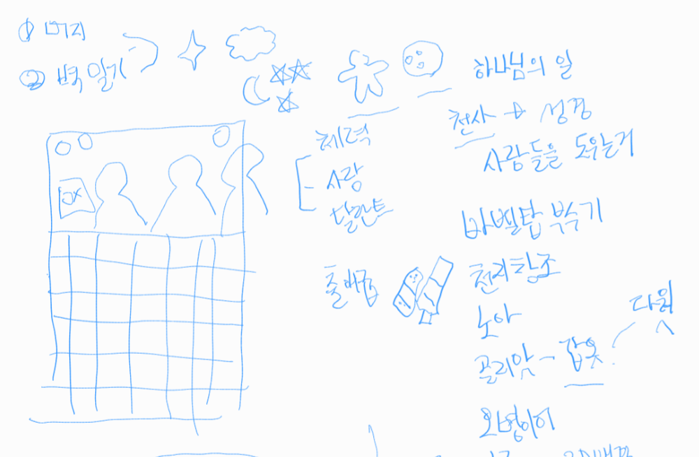
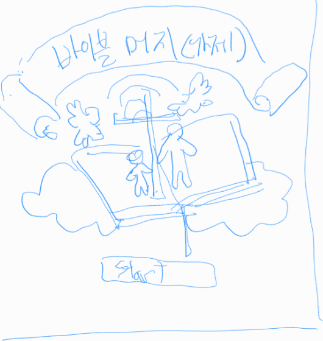
스케치에 담긴 요구사항
- 위쪽 무대에 도와줄 사람들, 아래쪽 합치기 보드
- 체력 = 사랑, 화폐 = 달란트
- 바벨탑 부수기, 골리앗과 갑옷, 3D 배경, 방치형 요소
AI 점검의 첫 단계는 이 스케치와 실제 게임을 한 줄씩 비교하는 것이었습니다 (4장).
2.1팀 첫 버전 v1.0
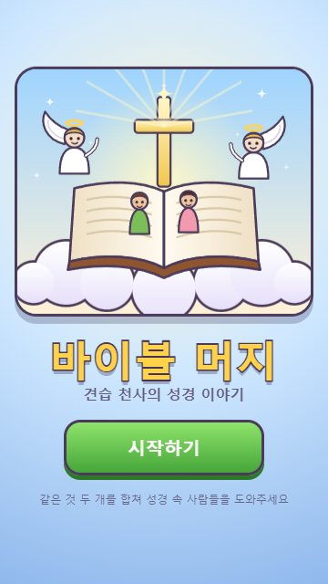
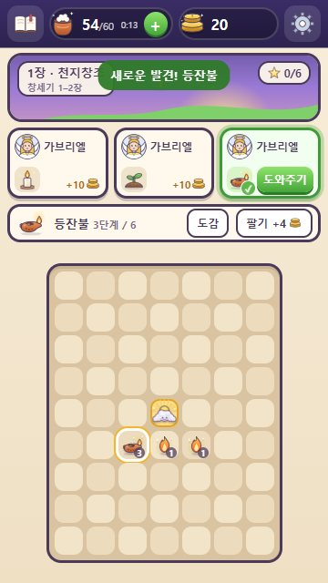
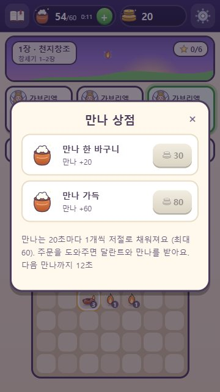
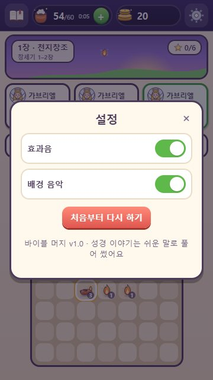
명령 기록: 10개 명령
2026-11-19 ~ 11-20, Claude Code 대화에서 내가 쓴 명령 원문
111-19"이 기획서로 만든 게임이야. 학습해줘" (손그림 기획 PDF + Unity zip + APK 첨부)학습
211-19"이제부터 유니티로 만들고, apk파일을 보내줘. 기획서와 비교해서 빠진부분 점검하고, 버그와 밸런스를 점검해줘"점검보고서
311-19"게임 이름 추천해주고 점검 사항 고쳐줘"v1.1
411-19(다른 세션) "미국에서 모바일 머지 게임 최고매출 순위 탑 3까지의 게임들의 역기획서를 작성해줘"역기획 3종
511-20"그럼 지금은 하지말고, 이 역기획서들 분석해서, 내 게임에 적용하면 좋을 것들 작성해줘"제안서
611-20"넣어줘"v1.2
711-20"게임 유니티로 수정할 수 있도록 파일 제작해줘"팀 README
811-20"apk 설치가 안돼. 문제가 뭐야?"원인 진단
911-20"같은 열쇠로 서명해줘"v1.3
1011-20"(UI 가이드.md 첨부) 말씀 퀴즈 넣어줘 … ui지침서 공유하고, 필요한 이미지 시트 작성해서 제미나이로 제작해서 이미지 퀄리티 올려줘"v1.3 · v1.4
AI 점검: 기획 대비 · 버그 · 밸런스
"재미없다"가 아니라, 숫자로 원인을 찾고 고쳤습니다.
4.1기획 스케치와 비교해 빠진 부분
| 기획 내용 | v1.0 상태 | 처리 |
|---|---|---|
| 무대에 도와줄 사람들 | 1~3장 무대에 인물 없음 | v1.1에서 장마다 인물 배치 |
| 바벨탑 부수기 | 벽돌 12개 | v1.1에서 16개 + 주문 2개 추가 |
| 방치형 | 오프라인 만나 회복만 (약함) | v1.2 장면 꾸미기로 달란트 쓸 곳 추가 |
| 체력 = 사랑 | 이름이 '만나'로 바뀜 | 팀 결정 필요로 남김 |
| 3D 배경 · 골리앗 갑옷 · 순위표 | 없음 | 그림·서버가 필요 → 리소스·사운드 담당에게 넘김 |
4.2버그 6건 (v1.1에서 수정)
진행 멈춤
마지막 주문 직후 0.4초 안에 앱이 꺼지면, 다시 켰을 때 다음 장으로 안 넘어감
만나가 멈춤
휴대폰 시계가 뒤로 가면 다음 만나까지 며칠이 걸림 → 대기 20초 상한
선물 두 번 받기
타이틀 화면에서 2분 넘게 두면 '천사의 선물'이 두 번 지급
투명한 주문 카드
사라지는 애니메이션과 다시 그리기가 겹치면 카드가 거의 안 보임
엉뚱한 주문 처리
카드가 사라지는 0.4초 동안 누르면 다른 주문이 처리됨 → 입력 잠금
알림 오류
알림이 짧은 시간에 3개 넘게 뜨면 오류 로그 (바벨탑에서 자주)
4.3밸런스: 계산으로 찾은 문제 4개
AI가 "L단계 아이템 1개 = 1단계 2L-1개"로 장마다 필요한 만나와 받는 만나·달란트를 계산했습니다.
| # | 문제 (v1.0) | 고친 것 |
|---|---|---|
| B1 | 스토리에서 달란트 약 1,450을 받는데 만나 60개가 80달란트 → 2장부터 만나가 사실상 무한, 방치 요소가 의미 없음 | 만나 값 인상(80→130) + 영구 강화 2종(생성기 축복 1,600 · 큰 만나 항아리 680). 스토리 달란트 2,160 < 강화 2,280 → 고르면서 쓰게 |
| B2 | 보스 피해 = 2L-1 → 합쳐서 던지든 따로 던지든 같아서 합칠 이유가 없음 | 피해표 1·3·7·16·36·80 (1단계당 효율 1.0 → 2.5), 체력 홍해 24→60 · 골리앗 32→80 |
| B3 | 6장 전체가 30~40분이면 끝남, 바벨 장은 내용이 얇음 | 주문 29 → 36개, 바벨 벽돌 12 → 16개 |
| B4 | 6단계 아이템이 스토리 주문에 한 번도 안 쓰임 | 추가 주문을 모두 6단계로 (해 · 노아의 방주 · 다윗의 물매 …) |
역기획 → 우리 게임에 반영
미국 매출 상위 머지 게임 3종을 역기획하고, 그중 우리 규모에 맞는 것만 골랐습니다.
5.1반영한 제안 4개 (v1.2)
| 제안 | 넣은 내용 |
|---|---|
| 이야기 장면 꾸미기 | 장마다 장면 조각 4~6개(모두 26개). 주문을 도우면 열리고, 달란트로 무대에 놓으면 인물이 한마디. 장 완료 = 주문 + 보스 + 장면 |
| 주문 아이템 위치 표시 | 주문 카드를 누르면 보드의 그 아이템 칸이 1.8초 반짝. 없으면 가장 가까운 아래 단계나 생성기를 알려 줌 |
| 자유 모드 주문 배합 | 3칸을 쉬움 · 보통 · 어려움(금색, 보상 2배)으로 고정 |
| 보스 피해표 | 단계가 높을수록 늘 이득 (B2 해결) |
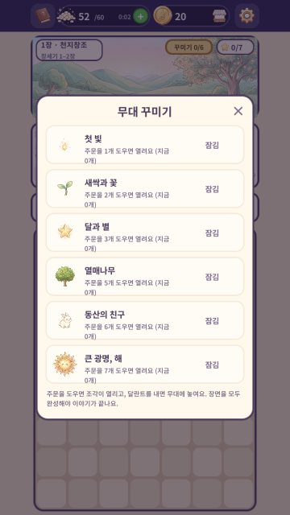
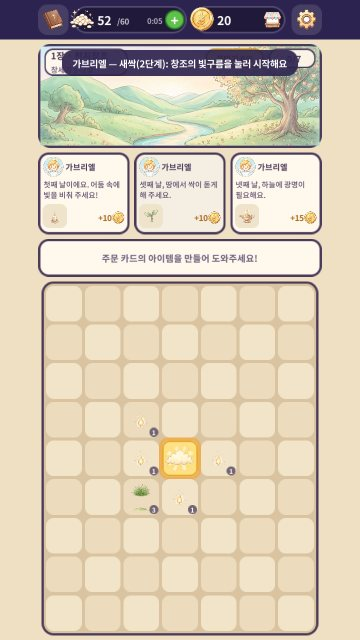
MD로 팀과 AI를 연결하기
AI가 만든 결과를 팀원도 읽고 고칠 수 있게, 기준과 위치를 MD 파일로 남겼습니다.
README.md — 팀 역할별 수정 위치
"무엇을 어디서 고치나요?" 표와 함께, 기획 → game_data.json, 리소스 → Sprites, UI → Game.UI.cs, 코딩 → Game.cs, 사운드 → Sfx.cs처럼 역할별로 만질 파일을 정리했습니다. 코드를 몰라도 JSON만 고쳐 대사·주문·수치를 바꿀 수 있습니다.
점검보고서.md — 버전별 변경과 계산
기획 대비 누락표, 버그 6건, 밸런스 계산, v1.1~v1.4 변경표, 자동 플레이 결과와 "점검이 못 본 것"까지 한 파일에 쌓았습니다.
이미지_시트.md — Gemini 요청 26번
그림 89장을 26묶음으로 나누고, 화풍·금지 사항·크기·파일명을 표로 고정했습니다. 작은 그림은 한 장에 3×2칸(6개)으로 그리게 해 같은 계열의 그림체를 맞췄습니다.
UI 가이드 MD — 그림에도 적용
"색만으로 구분하지 않기"를 그림 규칙으로 옮겨, 아이템 단계가 색뿐 아니라 크기·모양·장식 수로 달라 보이게 했습니다.
그림 교체: Gemini로 89장
코드로 그린 그림을, 이미지 시트 MD 하나로 같은 화풍의 수채화로 바꿨습니다 (v1.4).
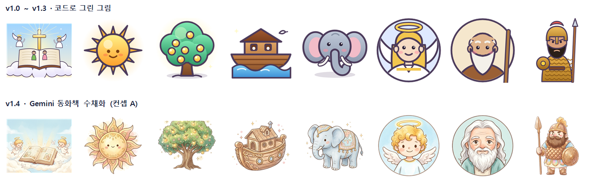
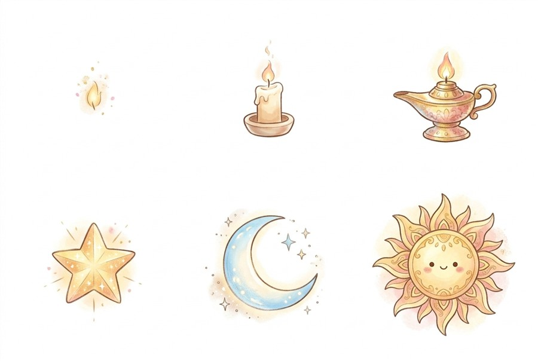
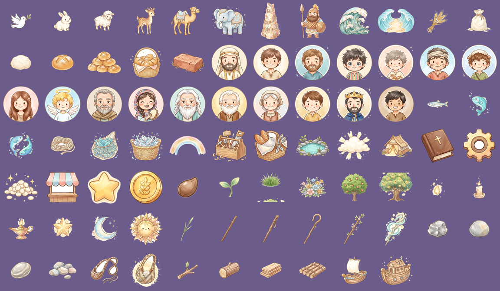
v1.0 vs v1.4: 같은 동선으로 비교
두 버전을 같은 순서로 누르도록 스크립트로 자동 플레이해 녹화했습니다. v1.4는 Unity WebGL로 빌드해 브라우저에서 녹화했습니다.
8.1나란히 비교 영상 (50초)
왼쪽 v1.0(팀 HTML5), 오른쪽 v1.4(Unity). 위쪽 파란 글씨가 그 장면에서 바뀐 점입니다. 흰 원은 자동 플레이가 누른 위치입니다.
8.2장면별로 달라진 점
| 장면 | v1.0 | v1.4 | 버전 |
|---|---|---|---|
| 그림 | 코드로 그린 SVG | Gemini 동화책 수채화 89장 + 아이콘 | v1.4 |
| 경제 | 만나 상점뿐 → 달란트가 남아돎 | 만나 값 인상 + 영구 강화 2종 | v1.1 |
| 주문 | 29개, 6단계 미사용 | 36개, 장마다 6단계 마무리 주문 | v1.1 |
| 보스 | 합칠 이유 없음 | 단계별 피해표 (효율 최대 2.5배) | v1.2 |
| 장면 꾸미기 · 위치 표시 | 없음 | 26조각 · 주문 카드 → 칸 반짝 | v1.2 |
| 말씀 퀴즈 | 없음 | 만나가 떨어지면 30문제 (정답 +6 · 오답 +2) | v1.3 |
| 설치 | 기기마다 서명이 달라 덮어 설치 불가 | 팀 열쇠로 자동 서명 | v1.3 |
8.3버전별 영상 따로 보기
v1.0 팀 HTML5 · 25초
v1.4 Unity 최종 · 45초
8.4v1.4 화면
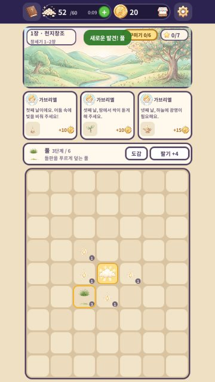
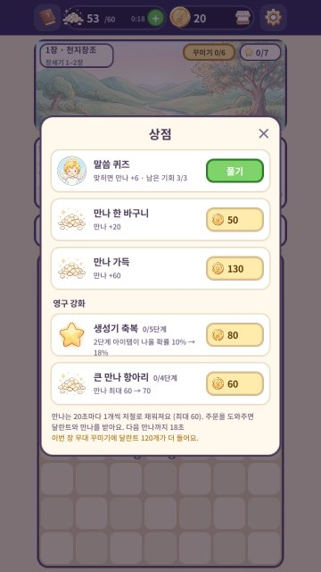
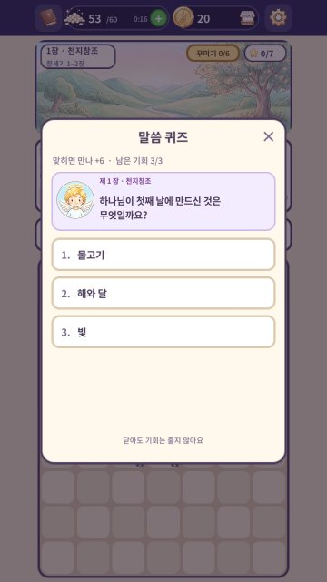
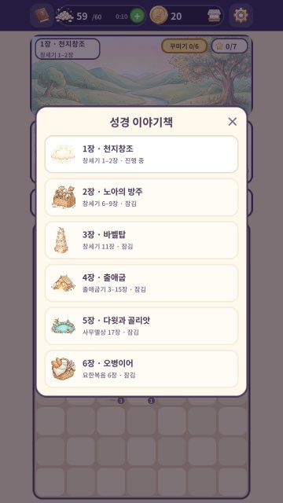
8.5직접 플레이
v1.0은 팀의 웹 빌드, v1.4는 Unity 프로젝트를 WebGL로 빌드한 것입니다(처음 불러올 때 약 10MB).
- 반짝이는 생성기를 눌러 아이템을 만들고, 같은 것 두 개를 끌어다 합칩니다.
- 주문 카드에 필요한 아이템을 만들면 [도와주기]로 이야기가 진행됩니다.
- 진행 상황은 이 브라우저에만 저장됩니다.
정리
팀 프로젝트에서 AI를 쓴 방식과 남은 일
9.1남은 일 (팀 역할별)
| 담당 | 남은 일 |
|---|---|
| 리소스 | 3D 배경, 다윗의 갑옷 아이템, 바벨 전용 생성기와 아이템 6개 그림 |
| 사운드 | 코드로 합성한 임시 소리를 실제 효과음·배경음악으로 |
| 서버 | 스케치에 있던 순위표 |
| 기획 (팀 결정) | 체력 이름: 사랑 / 만나 |